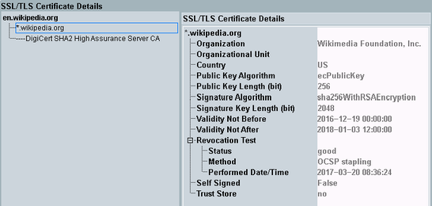

SSL/TLS Certificate Details View
The view is displayed via the hotkey "SSL/TLS Certificates", see "Hotkeys".
The view shows information about the certificates provided by the destination.

SSL/TLS Certificate Details view
The left part lists a tree of certificates. The root of the tree indicates the destination. The other entries show the certificate chain, from the end-user certificate of the domain via intermediate certificates down to the trusted root certificate.
Select an entry in the tree on the left to show the certificate details on the right.